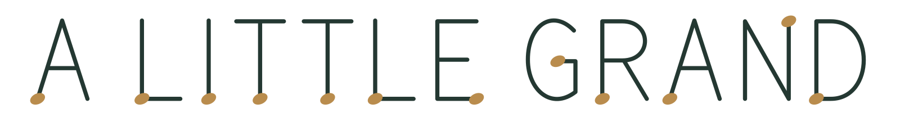

A virtual piano studio
Small moments.
Grand music.
Familiar melodies, falling notes, and a little room to unwind. Follow the music as every key and every line of the score comes to life.
 A little grand · music in motion
A little grand · music in motionFind us here
A little music, wherever you are.
One piece at a time, or a longer stay.
Follow A Little Grand on your favorite platform.
Behind the keys
A sunlit studio.
A different way to see music.
A Little Grand pairs piano music with animated instruments, falling notes, and scrolling scores. The notes you see follow the performance you hear.
Our scenes are virtual, and our piano performances are digitally rendered from scores and MIDI with sampled instruments. Composition, score, and recording credits accompany each release.
No rush. Just a little room for music.

Small moments. Grand music.
A Little Grand Publisher
Our private publishing tool lets the channel owner upload finished videos, schedule releases, and check their status. It is operated locally; visitors do not connect their social accounts here. How the app handles data · App terms